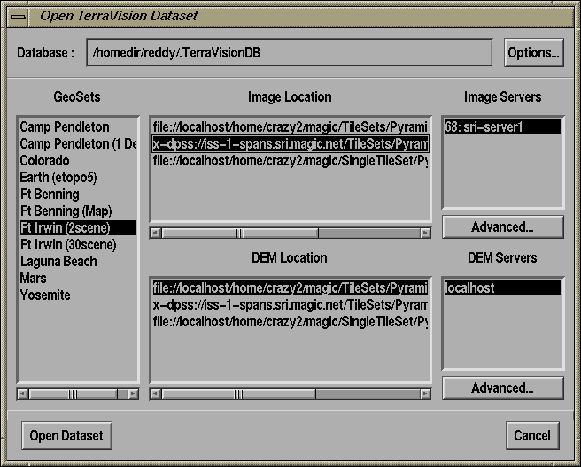
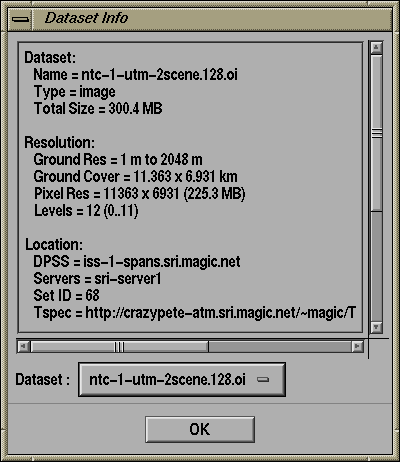

This option lets you load a TerraVision style dataset using the Dataset Database interface. From here you can select a dataset from the database, control various advanced connection settings, manage the contents of the database, and refresh the contents of the database by recontacting the specified servers. The Open TV window looks like:

At the top of this dialog, there is a text widget with the filename of your Dataset Database. The Dataset Database contains all of the instances of all of the datasets that TerraVision can access. You can enter a new filename here and press RETURN in order to load a different database. If the filename does not exist, then you will be asked if you want to create it. To the right of the database text widget there is a button marked "Options...". Clicking on this button will bring up the Database Options dialog.
The main window contains the dataset selection area. To the left side you will see a list of "GeoSets". A GeoSet is simply a region for which both DEM and imagery datasets are available. If you select one of the names in this list then you will see all of the locations for all of the DEM and Image instances. For example, in the above image we have selected the "Ft Irwin (2scene)" GeoSet and we see that there are 3 instances of the DEM and Imagery for this set: two on local disk and one on a DPSS. We have selected the DPSS instance for the imagery and one of the localdisk instances for the DEM.
The two lists on the far right specify the available server combinations for the selected dataset instances. For a localdisk instance this will just be "localhost", but for a DPSS instance this could be a list of sets with different server combinations. In the above example, the DPSS set is set 68 and exists on a single server (sri-server1). Below each of these lists there is a button called "Advanced...". Clicking on these will bring up the Advanced Connection Options for either the DEM or the Image dataset.
Once you have selected the dataset you wish to browse, you can press "Open Dataset". Once TerraVision connects to this dataset you can go to the Views menu in order to view the terrain.
TerraVision is an extremely complex application and it is often useful to know what it is doing at certain times. The debugging facility makes TerraVision output a stream of diagnostic information to the shell window that it was run from. TerraVision supports a number of levels of debugging output from Level 1 (most terse) to Level 4 (most verbose). This option is primarily available for the developers to effect debugging of the application.
In addition to setting the verbosity of debug output that would like, you can also restrict the debug output to specific areas of the TerraVision system. Currently these are:
Dataset InformationThis facility lets you find out various pieces of information about the datasets that TerraVision is currently connected to. This includes details such as the name of the dataset, its type (image, dem, or vrml), the total pyramid size, the ground resolution in pixels and ground units (meters or degrees), the location of the dataset including server and set information for DPSS datasets, etc.The opposite image shows an example of the Dataset Information window for a DPSS dataset on iss-1-spans.sri.magic.net. The Dataset option menu at the bottom of the window lets you select which of the datasets TerraVision is connected to that you wish to find out about. For a traditional TerraVision dataset this will normally just be the OI (ortho-imagery) and DEM datasets. In addition to information for each dataset, the Dataset Info window can display an Aggregate Report. This tells the user how many GeoSets are currently loaded, and what the total size is of all these DEM and OI datasets. The Aggregate Report also lists the total number of pixels in all of the loaded OI datasets, and the total number of DEM postings from all of the loaded DEM datasets. |
 |